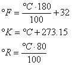
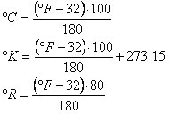
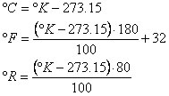
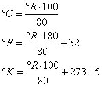

A bit of theory |
Scale Termometriche |
Un po' di teoria |
|
There are many thermometric scales, the most common are: Celsius or centigrade, Fahrenheit,
Kelvin and Reamur. All the scales have, like reference, two fixed points: the temperature of
the melting ice at the pressure of 1 atmosphere and the temperature of boiling water at
the pressure of 1 atm. Celsius scale vary from 0 °C to 100 °C; it is divided in 100 equal parts. Fahrenheit scale vary from 32 °F to 212 °F; it is divided in 180 equal parts. Kelvin scale vary from 273.15 °K to 373.15 °K; it is divided in 100 equal parts. Reamur scale vary from 0 °C to 80 °C; it is divided in 80 equal parts. Note: Fahrenheit scale is the most exact because it has a higher number of divisions if we consider a same range of temperature. |
Ci sono più scale termometriche, le più usate sono: la Celsius o
centigrada, la Fahrenheit, la Kelvin (detta anche scala assoluta), e la Reamur.
Tutte le scale hanno, come riferimento, due punti fissi: la temperatura del
ghiaccio fondente alla pressione di 1 atmosfera e la temperatura di ebollizione
dell´acqua alla pressione di 1 atm. La scala Celsius varia tra 0 °C e 100 °C; é divisa in 100 parti uguali (da qui il nome di scala centigrada). La scala Fahrenheit varia tra 32 °F e 212 °F; é divisa in 180 parti uguali. La scala Kelvin varia tra 273.15 °K e 373.15 °K; é divisa in 100 parti uguali. La scala Reamur varia tra 0 °R e 80 °R; é divisa in 80 parti uguali. Note: La scala Fahrenheit è la più precisa perchè ha un maggiore numero di divisioni a parità di intervallo di temperatura. |
|
|
Adopted formulas: °C to other scales  °F to other scales  °K to other scales  °R to other scales  |
Scarica l'applet ed il relativo codice java (±10 KB) Download the applet and the Java code (±10 KB) |
Formule adottate: °C altre scale °F altre scale °K altre scale °R altre scale |
|
How to use the web calculator: Choose the thermometric scale , type in the value to convert. To see the results click on the button <Calcola Temperature>. Use the web calculator only to verify your calculations. |
Come utilizzare la calcolatrice: Scegliere la scala termometrica, digitare il valore da convertire. Per vedere i risultati premere il pulsante <Calcola Temperature>. Utilizzate la calcolatrice solo per verificare i vostri risultati. |